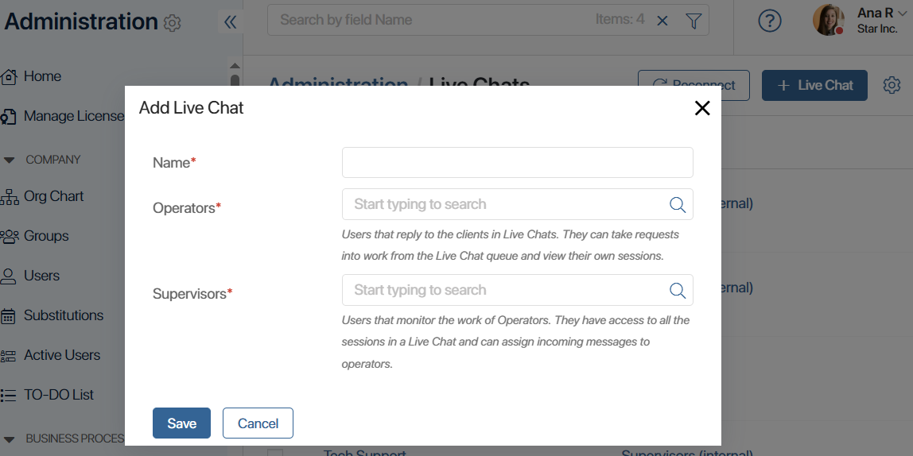
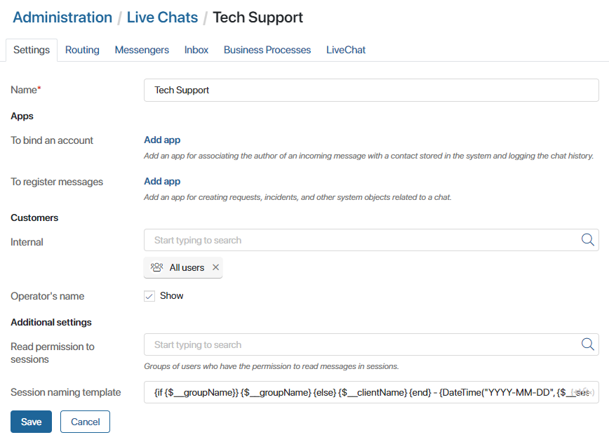

To create a communication channel for your external and internal users, add and set up a live chat. Your colleagues or partners will be able to communicate with you in the live chat, and operators will reply to them directly in the BRIX interface.
начало внимание
Only users included in the Administrators group can create and configure live chats.
конец внимание
Add a live chat
To add a new live chat:
- Open the Live Chats workspace and use the Live Chat Wizard widget if you are creating your very first live chat.
Alternatively, you can go to Administration > Live Chats and click the +Live Chat button.
- In the live chat creation window, fill in the required fields.

- Name*. Enter a name for the new live chat.
- Operators*. Select groups of employees who will work with requests in the live chat.
- Supervisors*. Select groups of employees who will supervise the operators in the live chat. They have access to the live chat’s settings and can assign incoming requests to specific operators.
- Click Save.
The live chat settings window will open. It features the following tabs: Settings, Routing, Messengers, Inbox, Business Processes, and LiveChat.
Settings tab
On this tab you can configure the main settings of the live chat you are creating:

- In the Apps section, specify which apps will store information about customers who contact you via the live chat and their requests:
- To bind an account. Click Add app and select an app that will store data about the live chat customers, for example, Contacts.
- To register messages. Click Add app and select apps that will store information about customer’s requests, for example, Appeals.
Please note that you can only select apps that have an Account type field in their context.
On a session page, on the About the Session panel, the operator can see the names of the selected apps and the +Bind button. When it is clicked, the app item creation form opens. The app item that the operator adds is bound with the current session. In this way, the operator can add a customer to the database or register a complaint, a tech support request, etc.
Moreover, bound app items allow you to display chats with customers on the forms of other apps. The operator can reply to a customer directly on the page of an app item or create a new session with them, and users who have the permission to read the session can view it. This functionality is available in the Live Chat Messages widget.
- In the Customers section, in the Internal field, specify groups of internal BRIX users who will be able to use the live chat. If you are connecting a live chat with third-party messengers to communicate with external clients, leave this field empty.
- Operator’s name. This option appears if you specified a user group in the Internal field. Check the Show box to let the user see the name of the operator in a live chat. If the option if disabled, only the live chat name will be shown to the user.
- Fill out the fields in the Additional settings section:
- Read permission to sessions. Click the magnifying glass icon and add user groups that will be granted the permission to view messages in the live chat’s sessions in the Live Chat Messages widget placed on app forms.
- Session naming template. Specify a template that will be used to form the name of each new session. The template can include context variables, for example, for the customer, the session creation date, the live chat name, etc. To add them, click {+} on the right side of the field. Moreover, you can use the DateTime() function in your template by clicking f(x). Read more about configuring templates in the Template syntax article.
- Save the settings.
Now employees can send a message to your live chat from BRIX, and operators can reply to them in the Live Chats workspace.
Routing tab
On this tab, you can specify which groups of users reply to messages in the live chat and set up routing rules.
The default rule is First Response. With this option, new sessions are queued, and they are assigned to the first person who starts working with them. You can create custom routing rules to flexibly distribute sessions based on any conditions you want. Read more in the Configure message routing article.
Messengers tab
Interaction in the live chat can be performed not only using BRIX chats. On the Messengers tab, you can connect one or more available messengers to a live chat. Moreover, you can connect a messenger created and used in your company to a live chat.
This is convenient, for example, when creating a support channel for your customers or partners. They will use their usual messengers and the operators will be able to respond to them from the BRIX interface.
Read more about integration with instant messengers in the following articles:
Inbox tab
Here you can connect your email inbox to the live chat; the incoming emails will then be converted into new sessions. When a user writes an email, a new session is created in the Live Chats section. This way you can collect requests from your corporate email and communicate with customers directly in the BRIX interface.
The following email services can be connected: Gmail, Outlook, and Office365. You can also set up an integration for an email with a custom domain using SMTP and IMAP. Read more in Connect an email to a live chat.
Business Processes tab
You can set up a process to start automatically from a live chat. The following events can trigger process start:
- When a new session in created.
- When a new message from a customer is received.
- When a session is closed.
To set up automatic process launch, select a business process and map the process input fields with the fields of the Live Chats app. Read more about it in the Configure automatic process start article.
It is also possible to launch a process manually during a conversation right from the session’s page.
Processes help operators work faster by automating some operations. For example, a process can be used to automatically add and process a new lead when a session is created.
LiveChat tab
On this tab, you can configure an online chat that can be placed on a website. All messages sent to the website chat will be recorded in the live chat and processed by an operator.
Moreover, you can connect several communication channels to the LiveChat widget, for example, instant messengers or an email inbox. In this case, the user will be able to choose where to communicate with an operator: on the website, in a messenger, or by email.
Read more about configuring LiveChat in the Create an online LiveChat for your website article.
Found a typo? Select it and press Ctrl+Enter to send us feedback